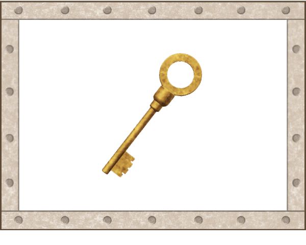
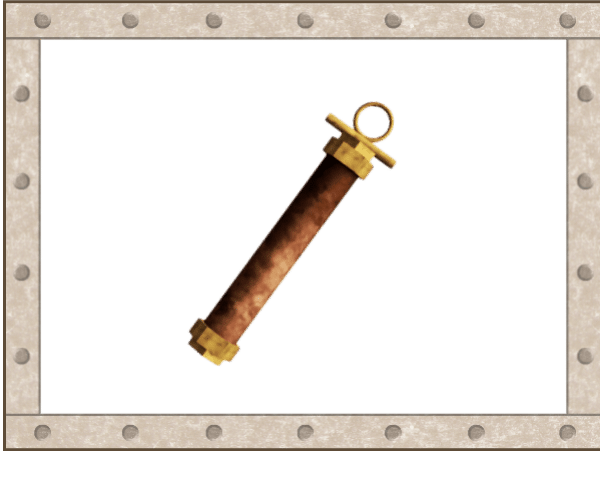
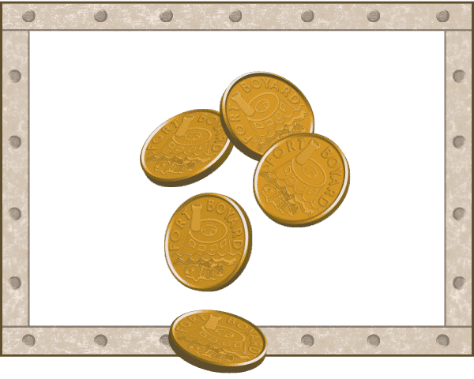
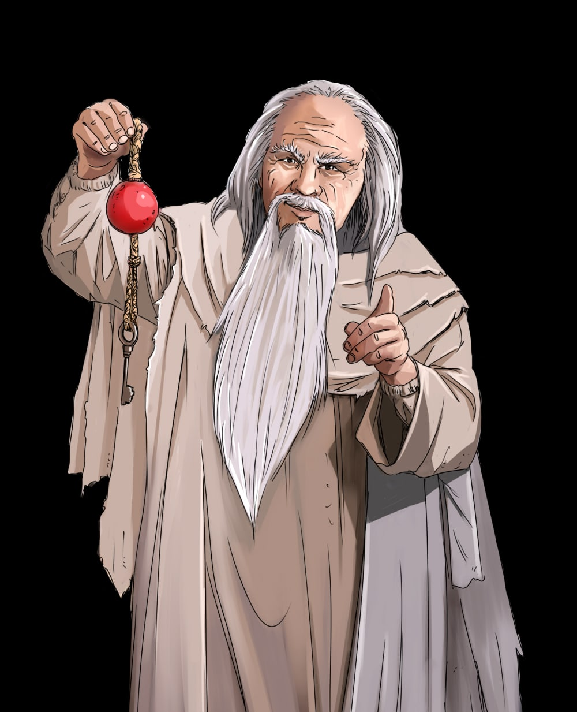

Règlement du fort
Le Pacte de l'Aventurier
Aventurier : Marius
Ce qui se gagne
Au fort, il y a trois choses à gagner. Elles ne se gagnent pas de la même façon.

Les clés
En réussissant tes épreuves de tous les jours.
Elles ouvrent la porte de la salle du trésor, et elles dévoilent l'indice du jour.

Les temps forts
En faisant quelque chose de bien sans qu'on te le demande.
Chacun t'offre des secondes en plus dans la salle du trésor.

Les boyards
En les attrapant dans la salle du trésor, le dimanche soir.
Ce sont eux qui se transforment en cartes Pokémon.
Ta journée au fort
Quatre épreuves par jour, cinq le week-end. Chacune vaut une clé, et chacune a sa fenêtre.
Matin · 7h15 → 8h00
L'Éveil du Fort
S'habiller · faire son lit · débarrasser la table du petit-déjeuner · se laver les dents et le visage
Midi · 12h00 → 13h30 (samedi & dimanche)
La Salle du Banquet
Mettre le couvert · débarrasser la table
Retour d'école · 18h00 → 18h30
Le Retour d'École
Les devoirs · la douche · le pyjama · le linge sale dans le panier
Soir · 19h30 → 20h00
La Veillée du Fort
Débarrasser la table · se laver les dents · passer aux toilettes
Coucher · 20h05 → 20h30
La Chambre du Trésor
Au lit et prêt pour demain, avant 20h30
Quatre clés du lundi au vendredi, cinq le samedi et le dimanche : 30 clés à gagner dans la semaine.
Ce que le fort protège. Le dessin animé du matin et la lecture du soir ne sont pas des épreuves : ni chrono, ni clé, le fort n'y touche pas. Mais ce sont eux qui bornent tes fenêtres. Finis l'Éveil du Fort avant 8h00 et le dessin animé est là. Sois au lit dès 20h05 et il te reste vingt-cinq minutes de lecture. Le temps que tu gagnes sur les épreuves, tu le gardes pour toi.
La torche de l'épreuve
C'est toi qui décides quand tu commences.
Chaque épreuve a son heure dans la journée. Quand cette heure arrive, sa torche s'allume sur l'écran du fort. Personne ne te dit rien : tu regardes le fort, et tu vois quelles torches brûlent.
Tant qu'une torche brûle, tu fais l'épreuve quand tu veux et dans l'ordre que tu veux. Personne ne te dit de commencer, et personne ne te dit de te dépêcher.
Mais une torche ne brûle pas éternellement. Quand elle s'éteint, l'épreuve est fermée et sa clé est perdue pour aujourd'hui. Ce n'est pas une punition : c'est juste que l'heure de la douche, ce n'est plus l'heure de la douche à minuit.
Le fort ne te réclame jamais rien et ne te presse pas. Il te montre seulement combien de temps il te reste pour décider. Et dans les cinq dernières minutes, la torche se met à vaciller — elle ne s'éteint jamais en douce.
Et quand la torche s'éteint, il reste les braises. Cinq minutes de plus pour cocher ce que tu as fait juste avant. La clé est la même : le fort sait bien qu'on ne regarde pas une tablette en sortant de la douche. Mais quand les braises s'éteignent à leur tour, c'est vraiment fini pour aujourd'hui.
Les braises s'arrêtent aussi dès que l'épreuve suivante s'allume : au fort, on ne mène jamais deux épreuves à la fois.
Se gérer dans le créneau
Il n'y a pas de chronomètre au fort. Il n'y a que la torche.
Personne ne te presse
Tu coches tes gestes à ton rythme, dans l'ordre que tu veux. Aller vite ne rapporte rien de plus : une épreuve bâclée vaut la même clé qu'une épreuve bien faite.
Mais la torche brûle
Elle ne s'arrête pas parce que tu t'arrêtes. Quand elle s'éteint, l'épreuve est fermée. C'est à toi de voir ce qu'il te reste à faire et le temps qu'il te reste pour le faire.
Tout se passe sur l'écran d'accueil du fort : le compte à rebours de la fenêtre en gros, tes gestes juste en dessous, et une phrase qui te dit où tu en es — « il te reste 2 gestes et 14 minutes ». Le fort ne te dit jamais de te dépêcher. Il te donne de quoi décider tout seul, et c'est ça, la vraie épreuve.
L'indice du Père Fouras
Chaque soir, le Père Fouras te donne un mot. Mais il ne te le donne en entier que si ta journée a été complète.

Chaque épreuve ratée dans la journée cache une lettre de plus dans le mot du soir. Et en dessous de deux épreuves réussies, le Père Fouras ne dit rien du tout.
Un mot par soir, du lundi au samedi. Six mots pour toute la semaine.
Essaie : combien d'épreuves as-tu réussies aujourd'hui ?
Le mot-code
Six soirs, six mots. Ensemble, ils parlent tous de la même chose.
Du lundi au samedi, tu récoltes six indices. Le dimanche soir, devant la porte, tu dois deviner le mot qu'ils cachent tous les six. Ce n'est pas un mot caché dans les lettres : c'est une idée cachée derrière les mots.
Les indices vont du plus vague au plus parlant. Le mot du lundi ne trahit presque rien ; celui du samedi te met sur la voie. Si tu trouves dès le mardi, tant mieux pour toi — mais le fort ne te facilitera pas la tâche avant la fin de la semaine.
▼
TRÉSOR
S'il te manque des mots, tu peux quand même essayer. Mais c'est beaucoup plus dur avec quatre indices qu'avec six.
Les temps forts
Ce sont les secondes que tu fabriques toi-même.
Un temps fort, c'est quelque chose de bien que tu fais sans qu'on te l'ait demandé : débarrasser une assiette qui n'est pas la tienne, aider à ranger, t'occuper de quelque chose tout seul.
Ça ne se réclame pas : ça se remarque. Quand tu en as fait un, tu le signales au fort et il part en attente du gardien : un adulte le validera quand il passera, et tu verras tes secondes arriver à ce moment-là. Deux au maximum par jour, et chacun vaut 10 secondes de plus dans la salle du trésor.
Les clés, c'est faire ce qu'on te demande. Les temps forts, c'est faire plus. Le fort ne paie pas les deux avec la même monnaie.

La salle du trésor
Dimanche soir. Tout se joue là.
-
La porte
Il te faut au moins 21 clés sur 30 pour qu'elle s'ouvre. En dessous, la salle reste fermée cette semaine — mais le Père Fouras te dira quand même le mot-code, pour que tu saches ce que tu as manqué.
-
Le mot-code
Tu annonces le mot que tes six indices cachaient. S'il est bon, le tigre recule et la grille se lève.
-
Le temps
25 secondes pour tout le monde, plus 10 secondes par temps fort de la semaine. Jamais plus de 90 secondes : personne n'a jamais vidé le fort.
-
Les boyards
Ils tombent pendant tout ton temps et tu les attrapes. Ensuite, on compte — et on les échange.
Essaie : combien de temps forts dans ta semaine ?
Les quatre règles d'or
- Une clé ne se perd jamais. Une épreuve ratée, c'est simplement une clé que tu n'as pas gagnée.
- Personne ne te demande de commencer. Tu regardes le fort, tu vois quelle torche brûle, et tu y vas.
- Un temps fort ne se réclame pas. Il se remarque.
- Le lundi, tout repart à zéro. Au fort, on ne traîne jamais de dettes de la semaine d'avant.
Le registre du gardien
Les réglages, côté adulte.
Ces valeurs sont des points de départ, pas des vérités. Le mieux est de faire une première semaine à blanc, sans annoncer de récompense, pour voir où il atterrit naturellement — puis de caler le seuil de la porte un cran au-dessus.
| Réglage | Valeur |
|---|---|
| Clés par jour (lun–ven) | 4 |
| Clés par jour (sam–dim) | 5 |
| Total de la semaine | 30 |
| Seuil d'ouverture de la porte | 21 |
| Chrono de l'épreuve | aucun |
| Alerte « torche vacillante » | 5 dernières min |
| Braises après la fenêtre | 5 min |
| Validation d'un temps fort | parent, code PIN |
| Indices dans la semaine | 6 |
| Indice verrouillé en dessous de | 2 réussites |
| Temps forts, maximum par jour | 2 |
| Secondes par temps fort | 10 s |
| Temps plancher dans la salle | 25 s |
| Temps plafond dans la salle | 90 s |
| Paliers : 2 cartes / 3 cartes / booster | 20 · 35 · 55 boyards |
L'énigme change toute seule chaque lundi. Le fort en garde douze en réserve — soit trois mois — et sert la suivante au changement de semaine, indices et mot-code compris. Celle de cette page, TRÉSOR, est volontairement hors rotation : elle sert d'exemple, elle ne tombera jamais en vrai. Tu n'as rien à préparer le dimanche soir. Le registre te laisse quand même réécrire les six mots, ou tirer l'énigme suivante si celle de la semaine ne te va pas.
Une clé peut toujours être accordée à la main. Le registre a une section « Corriger une journée » : tu choisis le jour, et tu accordes ou retires la clé de n'importe quelle épreuve. C'est la porte de sortie pour les cas que les règles ne prévoient pas — il l'a fait mais n'a pas pu le dire, ou l'inverse.
Les fenêtres horaires sont le seul vrai réglage à faire. Celles de la frise sont des valeurs par défaut, à remplacer par les horaires réels de la maison. Trop larges, elles ne poussent plus à démarrer ; trop serrées, elles transforment le jeu en course. Une bonne fenêtre vaut environ le double du temps de l'épreuve.
Le plancher de 25 secondes n'est pas décoratif : une semaine de routine parfaite mais sans aucune initiative doit quand même rapporter quelque chose, sinon le message devient « la routine ne sert à rien ».
Le serment
« Je connais les règles du fort. Je jouerai le jeu, et le fort jouera le sien. »
— Le Père Fouras